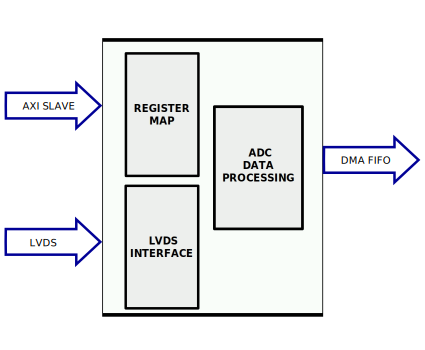

AXI HDMI RX#
The AXI HDMI RX IP core can be used to interface the ADV7611 device using an FPGA.
Features#
AXI based configuration
Supports multiple resolution (max 1080p)
Supports embedded sync video reception (16bit data)
YCbCr or RGB color space output
Supported on FMC-IMAGEON Xilinx Reference Design
Files#
Name |
Description |
|---|---|
Verilog source for the peripheral. |
Block Diagram#
Configuration Parameters#
Name |
Description |
Default Value |
Choices/Range |
|---|---|---|---|
ID |
Core ID should be unique for each axi_hdmi_rx IP in the system. |
0 |
|
IO_INTERFACE |
Type of the IO interface. 0 - Allow sampling of data on falling edge of the HDMI clock. others - always sample the input data on rising edge. |
1 |
Interfaces#
Physical Port |
Logical Port |
Direction |
Dependency |
|---|---|---|---|
s_axi_awaddr |
AWADDR |
in [15:0] |
|
s_axi_awprot |
AWPROT |
in [2:0] |
|
s_axi_awvalid |
AWVALID |
in |
|
s_axi_awready |
AWREADY |
out |
|
s_axi_wdata |
WDATA |
in [31:0] |
|
s_axi_wstrb |
WSTRB |
in [3:0] |
|
s_axi_wvalid |
WVALID |
in |
|
s_axi_wready |
WREADY |
out |
|
s_axi_bresp |
BRESP |
out [1:0] |
|
s_axi_bvalid |
BVALID |
out |
|
s_axi_bready |
BREADY |
in |
|
s_axi_araddr |
ARADDR |
in [15:0] |
|
s_axi_arprot |
ARPROT |
in [2:0] |
|
s_axi_arvalid |
ARVALID |
in |
|
s_axi_arready |
ARREADY |
out |
|
s_axi_rdata |
RDATA |
out [31:0] |
|
s_axi_rresp |
RRESP |
out [1:0] |
|
s_axi_rvalid |
RVALID |
out |
|
s_axi_rready |
RREADY |
in |
Physical Port |
Logical Port |
Direction |
Dependency |
|---|---|---|---|
s_axi_aclk |
CLK |
in |
Physical Port |
Logical Port |
Direction |
Dependency |
|---|---|---|---|
s_axi_aresetn |
RST |
in |
Physical Port |
Logical Port |
Direction |
Dependency |
|---|---|---|---|
hdmi_rx_clk |
CLK |
in |
Physical Port |
Logical Port |
Direction |
Dependency |
|---|---|---|---|
hdmi_clk |
CLK |
out |
Physical Port |
Direction |
Dependency |
Description |
|---|---|---|---|
hdmi_rx_data |
in [15:0] |
HDMI data. |
|
hdmi_dma_sof |
out |
Start of frame. |
|
hdmi_dma_de |
out |
Data enable. |
|
hdmi_dma_data |
out [63:0] |
HDMI DMA data. |
|
hdmi_dma_ovf |
in |
Data overflow signal. |
|
hdmi_dma_unf |
in |
Data underflow signal. |
Detailed description#
The top module (axi_hdmi_rx), instantiates:
axi_hdmi_rx_core module
the HDMI RX register map
the AXI handling interface
In axi_hdmi_rx_core module the video information is manipulated by passing through several processing blocks (see Block Diagram):
Embedded Sync module acquires the video information and splits it into video data and synchronization signals.
Chroma supersampling block, super samples the video information to obtain a 24 bit video information, has no impact on the video quality.
CSC (Color Space Conversion) –converts the video information from YCbCr color space to RGB color space. If YCbCr is the desired output color space the CSC block can be bypassed by setting to 1 the value of CSC_BYPASS in
CNTRLregister.Sync monitoring - monitors the recovered hsync and vsync against the programmed expected resolution. Asserts out of sync and resolutions mismatch indicators in the
TPM_STATUS2register.
Register Map#
DWORD |
BYTE |
Reg Name |
Description |
|||
|---|---|---|---|---|---|---|
BITS |
Field Name |
Type |
Default Value |
Description |
||
0x10 |
0x40 |
RSTN |
HDMI Interface Control & Status |
|||
[0:0] |
RSTN |
RW |
0x0 |
Reset, a common reset is used for all the interface modules, The default is reset (0x0), software must write 0x1 to bring up the core. |
||
0x11 |
0x44 |
CNTRL |
HDMI Interface Control & Status |
|||
[3:3] |
EDGE_SEL |
RW |
0x0 |
If set (0x1), incoming data is registered on the falling edge of the clock first. The default uses rising edge. |
||
[2:2] |
BGR |
RW |
0x0 |
If set (0x1), output BGR. The default is RGB. |
||
[1:1] |
PACKED |
RW |
0x0 |
If set (0x1) pack 24bit RGB data on 32bit dwords. The default pads the MSB to zeros. |
||
[0:0] |
CSC_BYPASS |
RW |
0x0 |
If set (0x1) bypasses color space conversion (if equipped). |
||
0x15 |
0x54 |
CLK_FREQ |
HDMI Interface Control & Status |
|||
[31:0] |
CLK_FREQ |
RO |
0x00000000 |
Interface clock frequency. This is relative to the processor clock and in many cases is 100MHz. The number is represented as unsigned 16.16 format. Assuming a 100MHz processor clock the minimum is 1.523kHz and maximum is 6.554THz. The actual interface clock is CLK_FREQ * CLK_RATIO (see below). Note that the actual sampling clock may not be the same as the interface clock- software must consider device specific implementation parameters to calculate the final sampling clock. |
||
0x16 |
0x58 |
CLK_RATIO |
HDMI Interface Control & Status |
|||
[31:0] |
CLK_RATIO |
RO |
0x00000000 |
Interface clock ratio - as a factor actual received clock. This is implementation specific and depends on any serial to parallel conversion and interface type (ddr/sdr/qdr). |
||
0x18 |
0x60 |
VDMA_STATUS |
HDMI Interface Control & Status |
|||
[1:1] |
VDMA_OVF |
RW1C |
0x0 |
If set, indicates vdma overflow. |
||
[0:0] |
VDMA_UNF |
RW1C |
0x0 |
If set, indicates vdma underflow. |
||
0x19 |
0x64 |
TPM_STATUS1 |
HDMI Interface Control & Status |
|||
[1:1] |
HDMI_TPM_OOS |
RW1C |
0x0 |
If set, indicates TPM OOS at the HDMI interface. |
||
0x20 |
0x80 |
TPM_STATUS2 |
HDMI Interface Control & Status |
|||
[3:3] |
VS_OOS |
RW1C |
0x0 |
If set, indicates VSYNC OOS - the core is unabled to detect/track VSYNC. Consecutive frames have different number of lines. |
||
[2:2] |
HS_OOS |
RW1C |
0x0 |
If set, indicates HSYNC OOS - the core is unabled to detect/track HSYNC. Consecutive lines have different lengths. |
||
[1:1] |
VS_MISMATCH |
RW1C |
0x0 |
If set, indicates received (detected) & programmed VSYNC (number of lines) mismatch. Incoming frames are stable but not the expected resolution. |
||
[0:0] |
HS_MISMATCH |
RW1C |
0x0 |
If set, indicates received (detected) & programmed HSYNC (number of pixels) mismatch. Incoming frames are stable but not the expected resolution. |
||
0x100 |
0x400 |
HVCOUNTS1 |
HDMI Interface Control & Status |
|||
[31:16] |
VS_COUNT |
RW |
0x0000 |
This is the expected active horizontal pixel lines (active resolution length). e.g. 1080 (1080p) |
||
[15:0] |
HS_COUNT |
RW |
0x0000 |
This is the expected horizontal pixel count (no. of pixel clocks per line). e.g. 1920 (1080p) |
||
0x101 |
0x404 |
HVCOUNTS2 |
HDMI Interface Control & Status |
|||
[31:16] |
VS_COUNT |
RO |
0x0000 |
This is the detected horizontal active pixel lines (active resolution length). This field is valid only if VS_OOS is zero. |
||
[15:0] |
HS_COUNT |
RO |
0x0000 |
This is the detected horizontal pixel count (no. of pixel clocks per line). This field is valid only if HS_OOS is zero. |
||
Access Type |
Name |
Description |
|---|---|---|
RW |
Read-write |
Reads will return the current register value. Writes will change the current register value. |
RO |
Read-only |
Reads will return the current register value. Writes have no effect. |
RW1C |
Read,write-1-to-clear |
Reads will return the current register value. Writing the register will clear those bits of the register which were set to 1 in the value written. Bits are set by hardware. |
Design considerations#
Additional IPs needed:
The AXI DMAC is used to get the video information from the core into memory. The audio path is separated from the video path, for audio axi_spdif_tx core is needed to receive the audio information from the ADV7611 device and transmit it to the memory. The whole system needs to be controlled by a processor (ARM or a softcore) that can program the registers.
Software support#
The core can be controlled by no-Os or Linux
References#
HDL IP core at library/axi_hdmi_rx
HDL project at projects/imageon
HDL project documentation at imageon